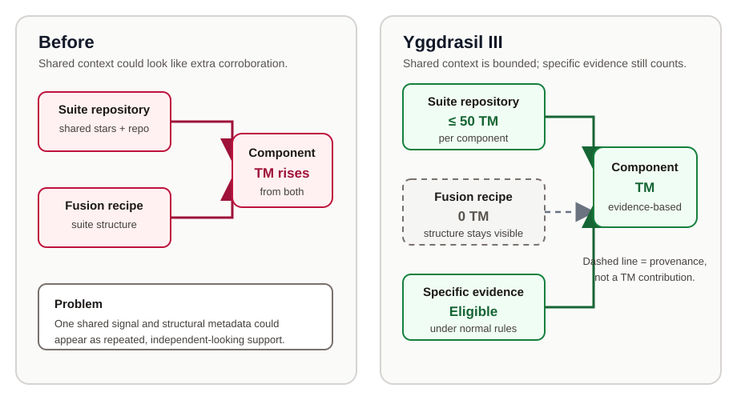
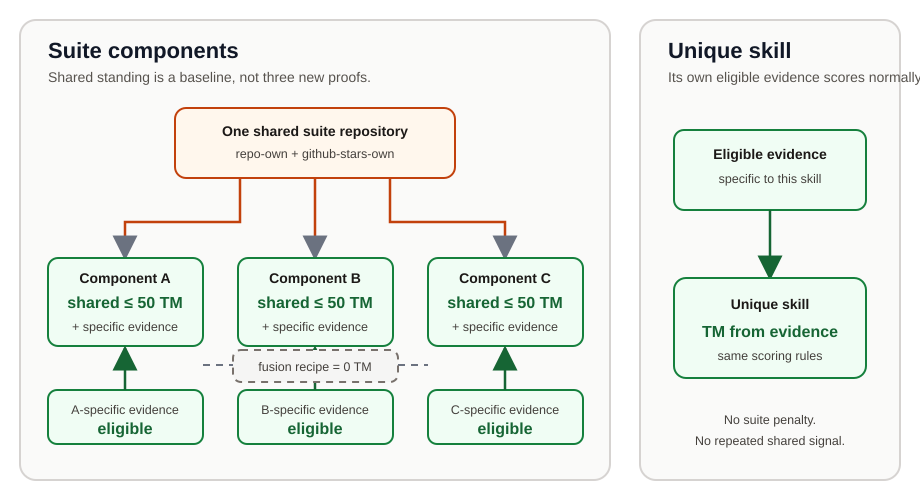

Yggdrasil III: Structural Provenance Is Not Trust
Trust Magnitude (TM) summarizes the positive evidence supporting a named skill. It is not a capability score, a performance ranking, or a verdict on usefulness. Yggdrasil III corrects how TM treats suites so that a suite's structure and shared repository standing cannot look like many independent confirmations.
The intent is balance, not punishment. Suites keep their composition, provenance, and eligible evidence. Unique skills and suite components are simply compared without repeatedly turning one shared signal into fresh corroboration. The rules changed TM calculations and public projections; they did not change stars.
Emergency amendment: repository-star recalibration
The initial Yggdrasil III projection exposed an overcorrection: github-stars-own divided repository adoption by up to four according to skillCountInRepo, leaving several established 5-star suites below the 250 TM floor. PR #1666 replaces that row formula with min(250, stars/250). Repository adoption now contributes directly, reaches its row cap at 62,500 stars, and no longer amplifies unrelated evidence. Same-source deduplication, the 50 TM suite-component baseline cap, and the independent S-witness safeguard remain unchanged.
A full gaia dev calibrate-trust-magnitude pass on the five current 5-star records produced:
| Skill | Recalibrated TM | Overall Trust Grade |
|---|---|---|
addy-osmani/agent-skills | 286.00 | A |
garrytan/gstack | 331.59 | A |
mattpocock/skills | 329.90 | S |
obra/superpowers | 315.15 | A |
ruvnet/ruflo | 290.00 | A |
All five remain above the numeric 5-star floor. The four A outcomes are intentional: stars establish adoption magnitude but do not substitute for an eligible own-layer benchmark-result, verifier-attestation, or peer-review witness. This emergency calibration preserves current rank records while the broader per-type balance audit continues in issue #1665.
What was corrected
Previously, a fusion-recipe row could add a large number to TM. That row describes which skills make up a Fusion; it does not independently test or validate them. Yggdrasil III therefore keeps the row for provenance, graph traversal, and rank rules, but fixes its TM contribution at 0 and excludes it from scoring Evidence Type diversity.
| Question | Before | Yggdrasil III |
|---|---|---|
| What does a fusion recipe show? | Structure and a numeric TM contribution | Structure only |
| Does it add a scoring Evidence Type? | It could | No |
| Does the suite disappear from the graph? | No | No |

Figure 1. Structure remains visible, but only eligible evidence contributes to Trust Magnitude.
The suite-versus-unique balance, in plain language
Imagine a suite repository containing several components. When a component has repo-own or github-stars-own evidence pointing to that shared repository, the evidence can contribute a baseline. But the repository does not become new, independent proof each time the same source supports another component.
Yggdrasil III applies three simple rules:
- Shared
repo-ownandgithub-stars-ownevidence from the suite repository is capped at a combined 50 TM per component. fusion-recipestructure contributes 0 TM. It still records how the suite is assembled.- Evidence specific to a component—including evidence from its own or another repository—remains eligible under the normal rules.
This bounds repeated shared or structural evidence while preserving component-specific evidence. Unique skills receive no bonus, and suites receive no blanket penalty: eligible evidence follows the same scoring rules, with only a suite component's repeated shared-repository baseline capped.

Figure 2. Shared suite standing is a bounded baseline; specific evidence does the differentiating work.
The S-grade safeguard
An S grade now requires all three of the following:
1. TM of at least 250. 2. At least three distinct Evidence Types with positive scores. 3. At least one positive, eligible benchmark-result, verifier-attestation, or peer-review row recorded at the skill's own evidence layer.
Rejected benchmark rows, deranked verifier rows, zero-scoring rows, phantom rows, and inherited witnesses cannot satisfy the third requirement. Repository evidence may still contribute where its formula allows, but it cannot replace the eligible own-layer witness.
The safeguard asks whether strong TM has at least one direct observation of the skill. It does not say that a skill without such a witness is bad, broken, or incapable.
What changed in the public projection
On the reviewed 264-skill snapshot, the corrected calculation produced 0 S, 58 A, 82 B, 106 C, and 18 ungraded named skills. The graph, API, contributor pages, and named-skill pages were regenerated from that calculation.
Those grade movements describe the available corroborating evidence under the new rules. They do not describe a loss of capability. The Yggdrasil III implementation did not edit evidence rows or stored stars.
Follow-up: the resolver correction
Review then found a narrower resolver bug. The shared skill-map loader removed every frontmatter role field because it confused the RFC marker role: variant with an unrelated display-only role. As a result, variant components could be treated as graded origins during fusion-recipe origin resolution.
PR #1647 fixed the shared resolver and added regression coverage. After that fix, merged PR #1649 recalibrated the one affected stored TM projection, ruvnet/ruflo-v3:
| Check | Result |
|---|---|
| Trust Magnitude | 216.00 → 186.00 (−30.00) |
| Overall Trust Grade | A → A |
Eight genuine role: variant entries | Individual dry-runs were no-ops |
| Evidence rows, rank, and stars | Unchanged |
This follow-up synchronized the named-skill record and its generated API, search, and index projections. It was not new evidence, a demotion, or a star change.
What remains unchanged
Yggdrasil III does not remove suites, erase their provenance, or discount component-specific evidence. It does not change the Star Bar, suite membership, origin attribution, evidence records, rank, or stars. It changes how TM distinguishes structural/shared context from corroborating evidence.
The result preserves two ideas at once:
- Building and organizing a meaningful suite is valuable work.
- Reusing one suite-wide signal is not the same as collecting independent evidence for every component.
ruvnet/ruflo-v3 record after the resolver recalibration.